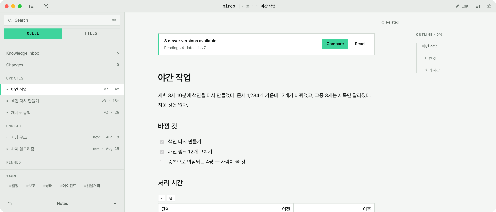
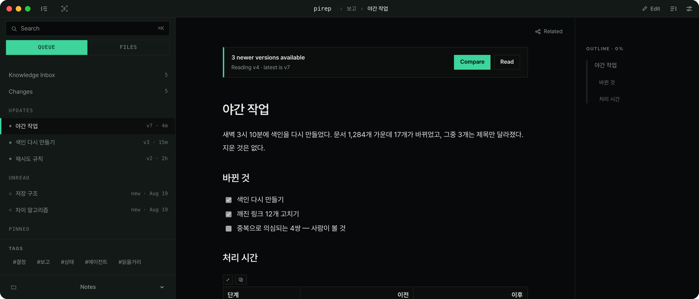

에이전트가 문서를 남기면, pirep은 지난번에 읽은 뒤로 바뀐 것만 보여줘요. 정리하라고 하지 않고, 파일은 내 컴퓨터의 마크다운으로 그대로 남아요.


폴더를 만들고 옮기는 일은 하지 않아도 돼요. 바뀐 문서와 아직 안 읽은 문서만 목록에 남고, 읽으면 빠져요.
지난번에 읽은 버전과 지금 버전을 비교해서, 무엇이 달라졌는지 알려줘요.
새로 생긴 문서는 읽기 전까지 목록에 남아요. 따로 표시하지 않아도 돼요.
다 읽은 문서는 목록에서 빠져요. 지우거나 옮기지 않아도 돼요.
pirep은 폴더를 열어서 읽어요. 파일을 서버로 보내지 않고, 형식도 바꾸지 않아요. pirep을 지워도 문서는 그대로 남아요.
AI가 고친 문서도, 다른 편집기에서 저장한 문서도 읽지 않은 업데이트로 쌓여요. 받아들일지 되돌릴지는 직접 고르세요.
설치하고 마크다운이 있는 폴더를 고르면 바로 읽을 수 있어요. 가입 절차는 없어요.
터미널이 싫으면 릴리스 페이지에서 dmg를 받으세요. dmg로 받은 앱은 첫 실행 때 시스템 설정 > 개인정보 보호 및 보안에서 한 번 열어 줘야 해요.
macOS · Apple 실리콘. Windows와 Linux는 준비 중이에요.
지울 때는 rm -rf /Applications/pirep.app